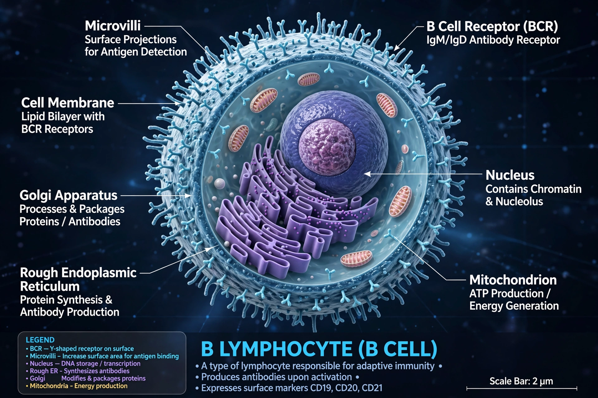

B cell
B cells, also known as B lymphocytes, are a type of white blood cell of the adaptive immune system. They mature in the bone marrow (in mammals) and are responsible for humoral immunity: when activated they differentiate into plasma cells that secrete antibodies, and into long-lived memory B cells. The "B" derives from the bursa of Fabricius in birds, where they were first characterised.

| System | Immune system |
|---|---|
| Site of maturation | Bone marrow (mammals); bursa of Fabricius (birds) |
| Key markers | CD19, CD20, surface immunoglobulin |
| Function | Antibody production, antigen presentation, memory |
Development
B cells develop from haematopoietic stem cells in the bone marrow, rearranging their immunoglobulin genes to generate a unique B cell receptor. Cells whose receptors strongly bind self-antigens are deleted or edited (central tolerance). Mature naive B cells circulate through blood and lymphoid organs such as lymph nodes and the spleen.
Activation
When a B cell's receptor binds its matching antigen, the cell internalises and presents it to helper T cells on MHC class II — B cells are thus also antigen-presenting cells. With T cell help, activated B cells form germinal centres where somatic hypermutation and class-switch recombination refine antibody affinity and isotype. The outputs are antibody-secreting plasma cells and memory B cells that respond faster on re-exposure — the basis of vaccination.
Clinical significance
Defects cause antibody deficiencies such as X-linked agammaglobulinemia; malignant transformation produces B-cell lymphomas and leukaemias. The anti-CD20 antibody rituximab depletes B cells and is used against lymphoma and autoimmune diseases including rheumatoid arthritis.
See also
Antigen-presenting cell · Antibody · Plasma cell · T cell